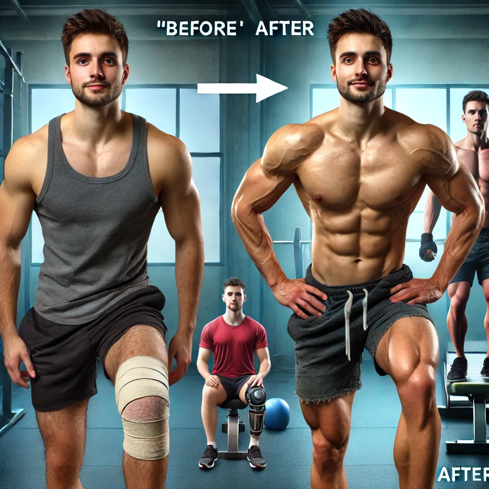
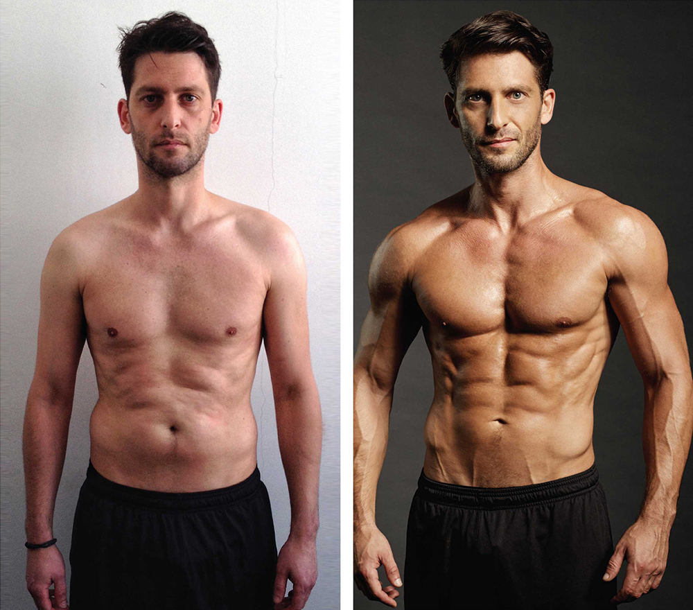

Mark: From Sedentary to Strong

Mark, a 40-year-old accountant, had spent years with little
physical activity, leading to weight gain and fatigue.
Through Fitness Fusion, he committed to a simple workout routine
with strength and cardio three times a week, along with
a balanced diet that fit his lifestyle. Six months later,
Mark
has lost 20 pounds, gained muscle, and feels more
energized and confident than ever.
Alex: From Injury to Peak Performance

After a knee injury, former high school athlete Alex struggled
with weight gain and limited mobility. He joined Fitness Fusion
to follow low-impact routines, rebuilding knee strength and
gradually adding cardio and weight training. One year later,
Alex has regained his mobility, dropped 15 pounds, and is
stronger than ever, proud of his steady progress.
Jake: Overcoming Stress and Weight Gain
Jake, a 30-year-old manager, felt tired and stressed,
leading to weight gain. With Fitness Fusion, he adopted quick,
high-intensity workouts, stress-relief exercises, and a structured
meal plan.
In just four months, he’s lost 18 pounds and feels
mentally
and physically refreshed, now managing stress with newfound
energy and focus.
Dan: From Low Energy to High Performance

College student Dan struggled with low energy and weight gain
from poor eating habits. Starting Fitness Fusion’s structured
workouts and nutrition guide, he began making healthier
choices.
After three months, Dan has lost 12 pounds and feels energized,
focused, and ready to tackle his studies and personal goals
with confidence.